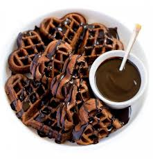

Waffles
There are different delicacies of waffles all around the world,here a few that might interest you;
- Chocolate Waffles
- Strawberry Waffles
- Cinnamon Roll Waffles
- Banana Waffles
This is a recipe on the Chocolate Waffles
Chocolate Waffles

Description: chocolate waffles is a perfect breakfast recipe made using milk, flour, eggs and chocolate sauce. This palatable and easy recipe can be paired up with vanilla ice cream or whipped cream to get a divine taste! It makes for a perfect birthday dish and you can also try this lip-smacking waffle recipe on occassions like kitty party and pot luck. This yummy recipe is ideal for both kids and adults alike. Do try this recipe, rate it and let me know how it turned out to be.
Ingredients
Waffles
- 11/2 cups all-purpose flour
- 1/2 cup white sugar
- 3 tablespoons unsweetened cocoa powder
- 1/2 teaspoon salt
- 1 cup milk
- 2 large eggs
- 4 tablespoons butter, melted
Hard Sauce
- 1 tablespoon butter, melted
- 3/4 cup confectioners' sugar
- 1/2 teaspoon vanilla extract
- 1 teaspoon milk
Others
Directions
- Preheat a waffle iron,
- Make waffles: Stir together flour, sugar, cocoa, baking powder, and salt in a large mixing bowl. Stir in milk, eggs, and butter until the mixture is smooth.
- Make a hard sauce: Stir together softened butter, confectioners; sugar, vanilla extract, and milk. Sauce shold be fairly stiff. Set aside.
- Spray preheated waffle iron with nonstick cooking spray. Pour waffle milk onto hot waffle iron. Cook until golden brown. Serve hot with hard sauce.
Return to Manu